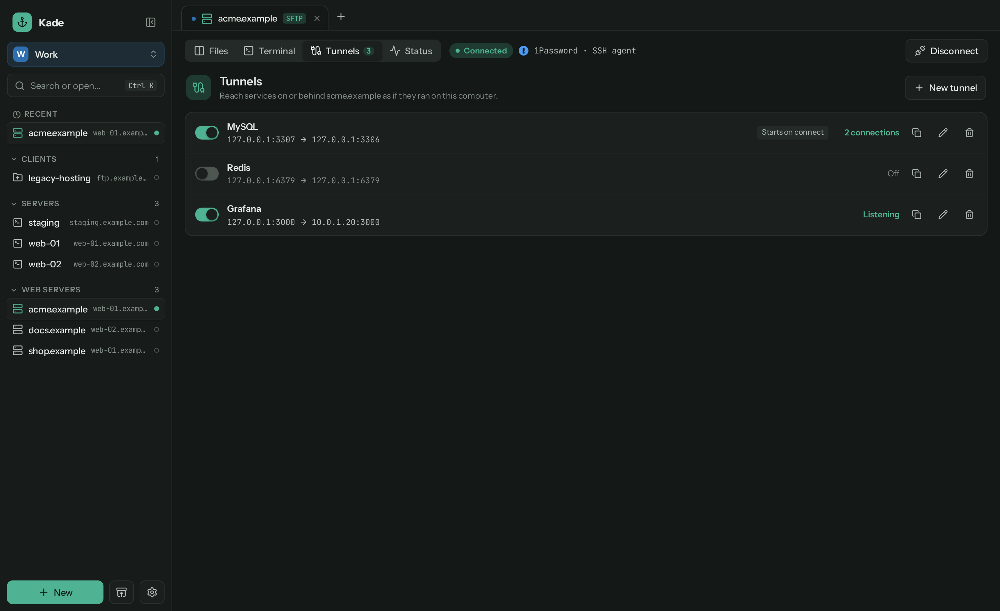
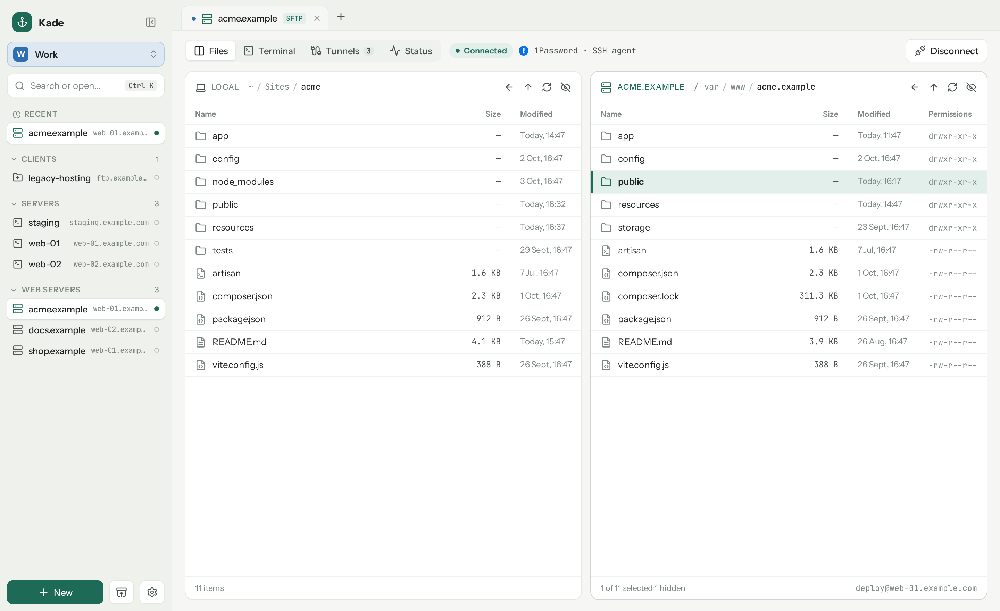
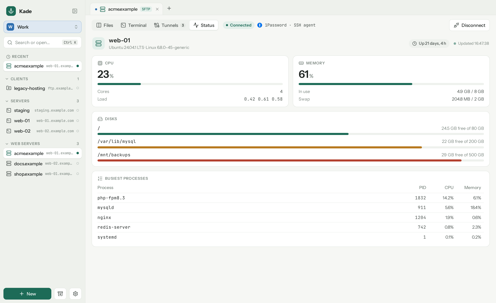
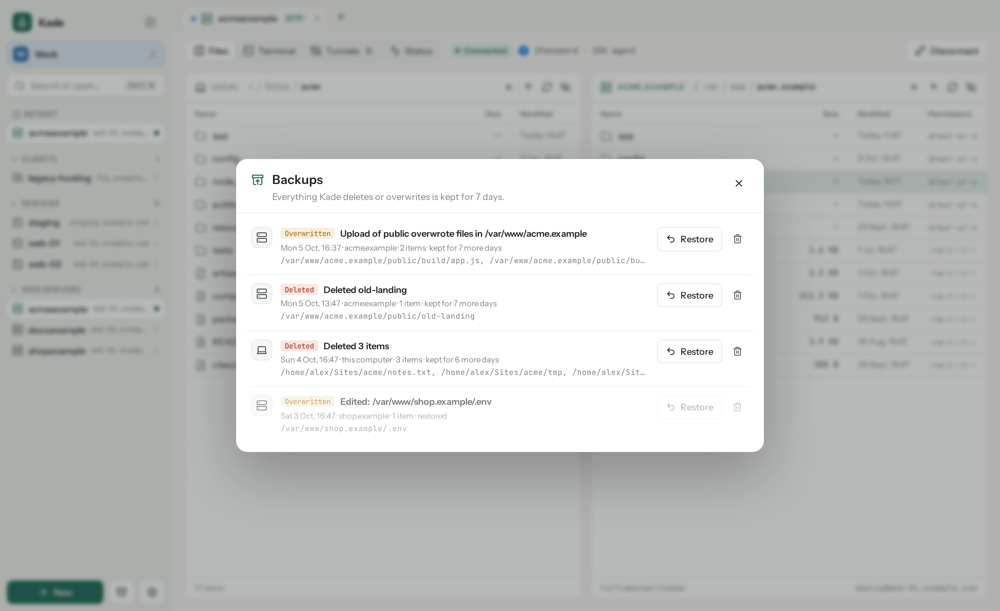
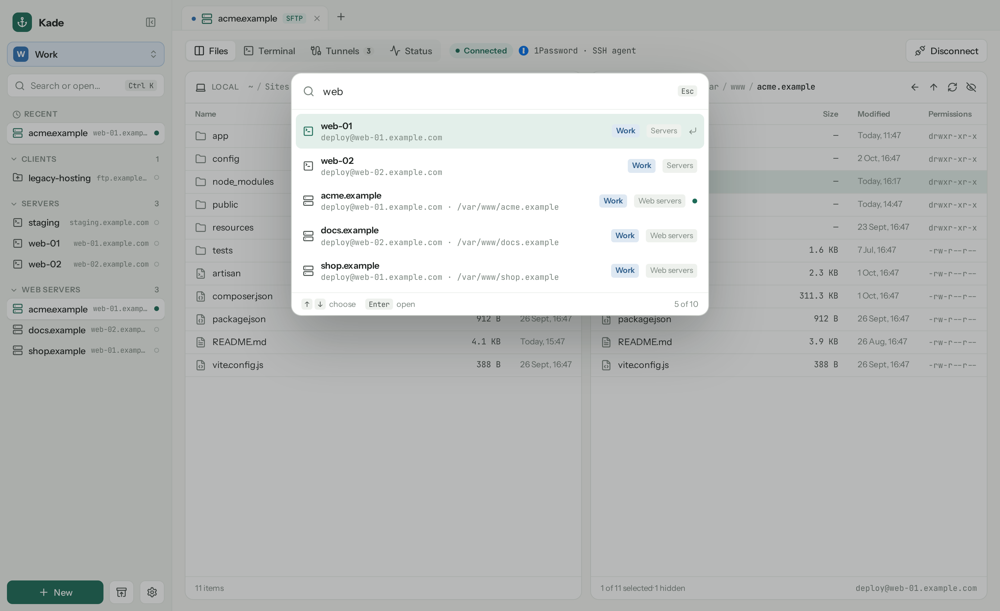

Tunnels
Reach the database that only listens on localhost.
Forward ports like ssh -L, saved with the connection and started when you connect.

Kade is a fast, friendly file manager for your servers, in the spirit of Transmit. Two panes, a real terminal, tunnels and 1Password sign-in. Free and open source.
curl -fsSL https://github.com/jurnskie/kade/releases/latest/download/install-macos.sh | bash
Kade is a native desktop app in Rust and Tauri. It opens in a blink, keeps your connections in one plain file, and never stores a password.
Forward ports like ssh -L, saved with the connection and started when you connect.

CPU, memory, disks and the busiest processes, live, over the same SSH connection.

Everything Kade deletes or overwrites is kept for a week. One click puts it back.

Search every connection across your Home and Work workspaces, and jump straight in.

This computer on the left, the server on the right. Drag between them.
Ctrl ` flips to a full xterm on the same SSH connection.
Use the 1Password SSH agent, ssh-agent, a key file or a password you type.
Double-click a server file. Every save is uploaded, with a backup of the last one.
Point Kade at Syncthing, iCloud Drive or Synology Drive. Your laptop catches up.
Let Claude Code add, test and open connections. Off by default, local only.
One click in Settings fetches the latest release from GitHub.
Bring your connections from ~/.ssh/config, Cyberduck, FileZilla and Transmit.
Kade finds your ~/.ssh/config, Cyberduck bookmarks and FileZilla Site Manager by itself, and reads a Transmit export. Folders become groups, key files come along, duplicates are left unticked.
No account, no cloud, no tracking. Kade talks to your servers, and to GitHub to check for updates. That's it.
Typed at connect time, or read from 1Password through op when you need them.
Against your own ~/.ssh/known_hosts, with the fingerprint shown before you trust a new server.
Connections live in kade.json. Sync it, back it up, read it. Deletes win over stale copies.
Every line is on GitHub. Build it yourself with pnpm tauri build.
One line installs or updates Kade. The script checks the checksum before it touches anything.
~ $ curl -fsSL https://github.com/jurnskie/kade/releases/latest/download/install-macos.sh | bash ✓ Kade installed in /Applications
~ $ curl -fsSL https://github.com/jurnskie/kade/releases/latest/download/install-linux.sh | bash ✓ Kade installed in ~/.local/bin